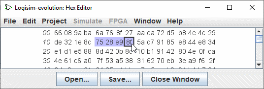

上一节: 内存组件
十六进制编辑器
Logisim-evolution 包括一个集成的十六进制编辑器，用于查看和编辑内存内容。 要访问它，首先在资源管理器窗口中的存储库中选中RAM或者ROM, 请打开内存组件的弹出菜单（ Right-click 该组件）并选择 | Edit Contents.... | 或在属性中选择 Contents 。

左侧斜体数字显示内存地址，以十六进制书写。 其他数字显示从该内存地址开始的值； 十六进制编辑器每行可以显示四个、八个或十六个值，具体取决于窗口中适合的内容。 为了帮助计数，每组四个值之间有较大的间距。
您可以使用滚动条或键盘（ 箭头键、home、end、向上翻页和向下翻页 ）浏览内存。 键入十六进制字符将更改当前选择的值。
您可以通过拖动鼠标、 按住 Shift 键单击 鼠标或在按下shift的同时使用键盘在内存中导航来选择一系列值。 可以使用 | Edit | 菜单或关联的快捷键（ Ctrl-C Ctrl-V、Ctrl-X。 .. ); 剪贴板也可以转移到其他应用程序中。
两个按钮（ 打开... 、 保存.. ）允许您从文件加载或保存数据。
下一步： 弹出菜单和文件 。